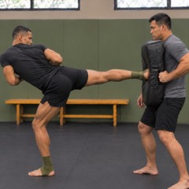
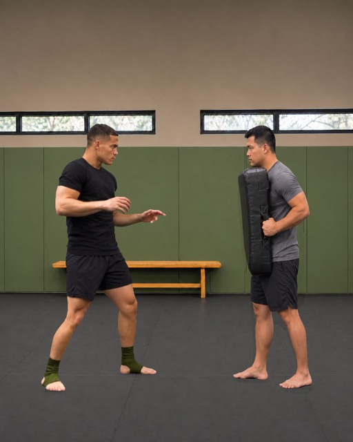
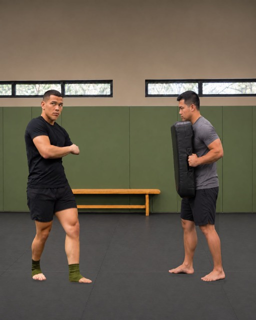
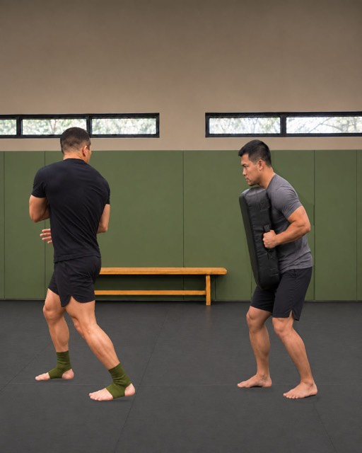
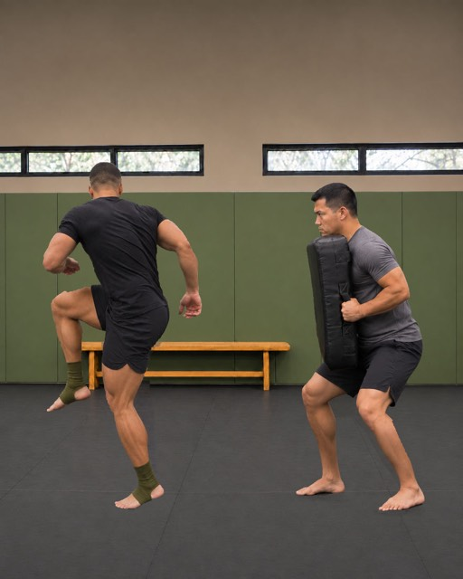
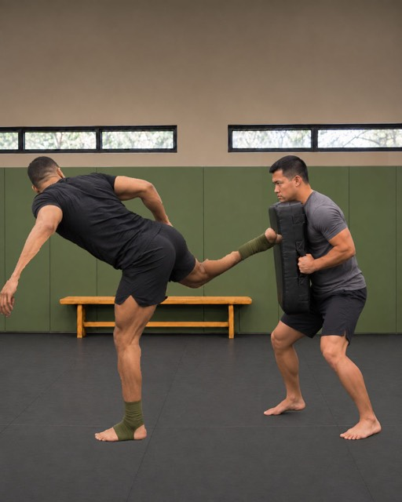
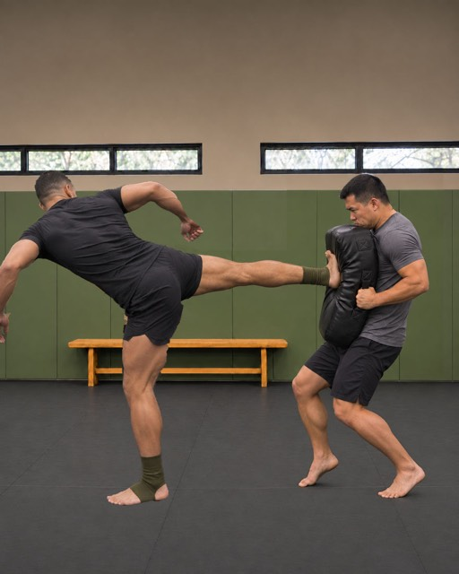

1On guard, feet apart, facing the target. Turn from here and you lose your balance: set it up first.

2First beat: the feet cross before you turn. Your eyes stay on the target.

3You turn on crossed feet, balanced, eyes already back on the target.

4The knee comes up as you finish the turn: that's what chambers the kick. The upper body follows.

5The torso leans and the leg extends toward the pad, heel first.

6The heel lands on the pad your partner holds, at liver height. Turn, knee and kick become one.